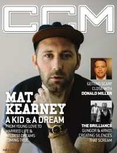

CMnexus
: Contemporary Christian culture, music, and media.
|
Mat KearneyOn the cover
1 March 2015
CCM Digital | Media coverage:- Jan 2005 in CCM "Ones to Watch: Discovering "Graceland"", by Kelly O'Neil
- Jan 2005 in Relevant "Spotlight: Mat Kearney", by Jesse Carey
- Nov 2005 in Campus Life "Music: How God Used My Dark Past", by Todd Hertz
- Jul 2006 in Relevant "Master of His Own Destiny: The Allegedly Accidental Success of Mat Kearney", by John Holliday
- Jan 2007 in Group "Culture: Ministry and Media: Mat Kearney", by Bryan Belknap
- Jun 2007 in CCM "Undeniable: Mat Kearney: An Emerging Rock Star", by Brian Quincy Newcomb
- Jul 2009 in Group "The Rip Out: Ministry and Media: Mat Kearney", by Scott Firestone IV
- Aug 2010 in CCM Digital "The Fringe: Mat Kearney", by Matt Conner
- Jan 2012 in Relevant "The Stranger Side of Mat Kearney", by Alyce Gilligan
- 1 Mar 2015 in CCM Digital "Mat Kearney", by Andy Argyrakis
- 1 Mar 2015 in CCM Digital "A Couple More Questions With Mat Kearney", by Andy Argyrakis
- Mar 2018 in Relevant "Mat Kearney", by Rachel Givens
Albums & reviews:2006: Nothing Left To Lose
2009: City of Black & White
2020: Until We Meet Again... Live Unplugged
2021: January Flower
2024: Mat Kearney
Award Summary (Nominations / Wins)
Dove Awards2007 Dove Awards |
|